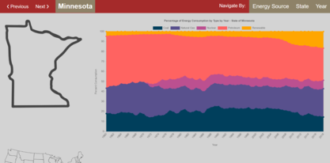
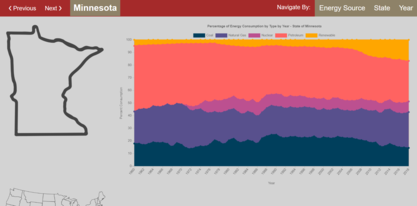

Projects
Project One: Making my Own Mario Game
Purpose:
Create a video game based on the Super Mario series which incorporates player interaction, camera movement, and enemy AI behavior.
What I did:
Researched, designed, and tested a videogame using Unity Game engine and C#.
I also made it compatible with both Android and WebGL platforms.
I plan on expanding this game by bugfixing and adding more levels and features, such as a timer and point system.
Use WASD to move and press E to fire if you have the fireflower equipped.
Disclaimer: Under Section 107 of the Copyright Act in 1976, allowance is made for "Fair Use" for purposes such as criticism, comment, news reporting, teaching, scholarship, and research. Fair use is a use permitted by copyright statute that might otherwise be infringing. Non-profit, educational or personal use tips the balance in favor of fair use. This videogame was made purely for personal, educational, and non-profit purposes. All rights and credit go directly to its rightful owners and no copyright infringement is intended.
Project Two: Making my Own App

Purpose:
Create an app that extracts and displays information on how much time the user spends on their phone over various time periods.
What I did:
Researched, designed, and tested an Android app, using Android Studio and Java.
This app is still under development and being tested, as there are numerous apps that could be running in the background of a person's phone that tend to offset the statistics.
Project Three: Various School Projects
Dynamic Webserver:
Using Javascript and NodeJS, my team and I created a dynamic website that queries information from a US energy database to allow a user to analyze data by year, state, or resource.
Our website then uses that information to dynamically generate tables, charts, and images according to the selected year, state, or resource.
Graphic Design Techniques:
Using Javascript and OpenGL, I implemented 3D Projection with line clipping
and 3D Shading and Illumination with Gouraud and Phong algorithms.

 
